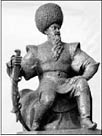

Alparslan
Alparslan (1029-1072)
Büyük Selçuklu Devleti Sultanı Alparslan, 20 Ocak 1029’da doğdu. 1064 yılında tahta çıktığında tarihte büyük devlet adamı olarak anılacak olan Nizamülmülk’ü vezir yaptı. Malazgirt Zaferi’yle Türklere Anadolu’nun kapılarını açtı. Türklerin Anadolu için ölüm kalım savaşı verdikleri 26 Ağustos 1071 Malazgirt Zaferi ve 26 Ağustos 1922 Büyük Taarruz’un başlaması aynı gün, aynı ayda olmuştur.
Bizans İmparatoru Diyojen, İstanbul’dan iki yüz bin kişilik ordusuyla Anadolu’nun doğusuna hareket etmeden önce şöyle söyler:
“Doğu hudutlarımızda büyük bir islam tehlikesi belirmiştir. Bu tehlikeyi büyümeden ortadan kaldırmalıyız. Ordunun başında, bu tehlikeyi kesin olarak kaldırmaya gidiyorum.”
Bizans İmparatoru Diyojen’in hedefi sadece Türk akınlarını önlemek değildi. O başkentlerine kadar giderek Türkleri daha doğuya sürmeyi ve bütün İslam ülkelerini ele geçirmeyi amaçlamıştı. Hatta alacağı şehirleri hangi komutanlarına pay edeceğini bile planlamıştı.
Tüm bunları haber alan Alparslan 50 bin kişilik ordusuyla Anadolu’ya doğru hareket eder. Alparslan’ın casusları düşmanın büyük bir orduyla geldiğini haber vermek için huzura çıktıklarında endişeyle şöyle derler:
“İki yüz bin kişilik Bizans ordusu bize doğru yaklaşıyor!”
Çevresindekilerin endişeli bakışlarını sezen Alparslan sakin bir şekilde, “Önemi yok, biz de onlara yaklaşıyoruz” der.
İki ordu 25 Ağustos 1071 sabahı, savaştan bir gün önce, Malazgirt Ovası’nda karşı karşıya geldiklerinde birbirlerine savaş öncesi heyetler gönderirler. Diyojen gelen Türk heyetine ordugâhında, kışlamak için İsfahan’ın mı, yoksa Hamedan’ın mı daha iyi olduğunu sorar.
Ardından, “Sultanınıza söyleyin, kendileriyle barış görüşmelerini Rey’de yapacağım. Ordumu İsfahan’da kışlatıp, atlarımı Hamedan’da sulayacağım” der.
Elçiler bu sözleri Sultan Alparslan’a ilettiklerinde, o da gelen heyetle şu cevabı gönderir:
“Söyleyin imparatorunuza, atlarınızın Hamedan’da sulanacağından eminim, fakat kendilerinin nerede kışlayacağını ise tam olarak bilemiyorum doğrusu...”
Türk ordusu savaş başladığında, bozkır çevirme hareketini uygulamak için hilal şeklini alır. Gün boyu süren savaş sonunda Bizans ordusu dağılır ve İmparator Diyojen yaralı olarak ele geçirilir.
Türkleri bir bayrak altında toplama isteğiyle seferler düzenleyen Sultan Alparslan, huzuruna kabul ettiği düşman bir kale komutanın hançeriyle 25 Ekim 1072’de hayata gözlerini yumar.